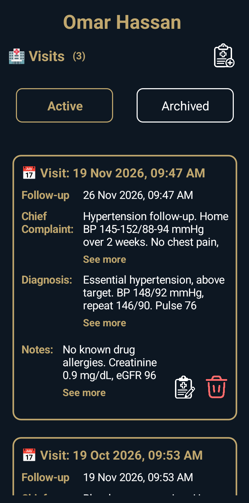
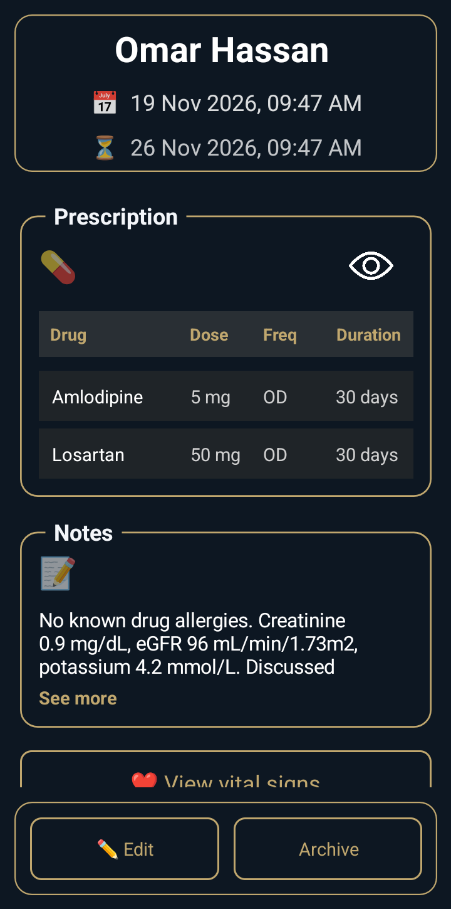

شرح المزايا
إدارة ملفات المرضى وتوثيق الزيارات
يجمع ميديكال سبيس تاريخ المريض وتفاصيل كل استشارة في سياق واحد. راجع الزيارات السابقة، ووثّق التقييم الحالي، وحدد خطوات المتابعة بناءً على معلومات الزيارة.
حمّل التطبيق من Google Play

تكبير الصورةسجل زيارات المريض المؤرّخ
راجع تاريخ المريض والزيارات السابقة
يعرض ملف المريض الزيارات بتاريخها، لتعود إلى المعلومات المسجلة في الاستشارة المطلوبة. يساعد السجل على متابعة تطور الحالة، مع بقاء مسؤولية التحقق من دقة المعلومات السابقة وملاءمتها للتقييم الحالي على الطبيب.
وثّق تفاصيل الاستشارة في سياقها
سجّل الشكوى والتشخيص وخطة العلاج والملاحظات داخل الزيارة. ويمكن مراجعة الوصفات والعلامات الحيوية في سياق الاستشارة نفسها. قبل اعتماد البيانات، تحقق من المريض والتاريخ والنص السريري وتفاصيل الدواء. وإذا استخدمت الإدخال الصوتي، راجع النص الناتج وصحّح أي التباس بدل افتراض دقة التفريغ بالكامل.
خطوات الاستخدام
- افتح ملف المريض وراجع سجل الزيارات المؤرّخ.
- افتح الزيارة المناسبة أو أنشئ زيارة وسجّل تفاصيل الاستشارة.
- راجع الوصفات والقياسات وخطة المتابعة قبل اعتماد البيانات.
من داخل التطبيق
لقطات أصلية من التطبيق. سجلات المرضى والحوار السريري أمثلة افتراضية، واستُبعدت بيانات الاتصال الخاصة.
سجل زيارات المريض المؤرّخ
 تكبير الصورة
تكبير الصورةالتشخيص وخطة العلاج في الزيارة


تكبير الصورةتفاصيل الوصفة
أسئلة عن الميزة
هل يمكن تسجيل أكثر من زيارة للمريض؟
نعم. تعرض الواجهة المصورة عدة زيارات مؤرخة للمريض نفسه، ويمكن الرجوع إلى كل زيارة.
هل يمكن مراجعة الوصفات والعلامات الحيوية مع الزيارة؟
نعم. تتضمن المسارات المعروضة تفاصيل الوصفة والقياسات المسجلة في سياق الزيارة الطبية.
هل سجلات المرضى المعروضة حقيقية؟
السجلات أمثلة افتراضية أُعدّت للموقع. الصور من واجهة التطبيق الفعلية ولا تعرض تاريخًا طبيًا لمريض حقيقي.